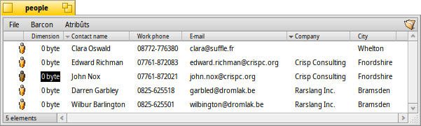

Atribûts
I atribûts a son cjamps di dâts che a apartegnin a un file ma no son part di chel file, p.e. no vegnin calcolâts te dimension dal file e a puedin jessi copiâts o cambiâts cence tocjâ il file. Il sisteme al dopre chescj atribûts par archiviâ p.e. la dimension dal file, il gjenar di file o la date de ultime modifiche. Chest al è simil a altris sistemis operatîfs e i lôr filesystem.
La diference e je che tu puedis zontâ cualsisei gjenar di atribût a cualsisei file e mostrâju o rindiju modificabii intun barcon dal Tracker. Tu âs dome di definî il gjenar di atribût che tu desideris zontâ a un gjenar di file (p.e. stringhe, intîr o ore) e dâi un non e une descrizion.
Il file di bessôl nol à nancje bisugne di contignûts. Bute un voli a chescj file di People par esempli:
Come che tu puedis viodi, chescj a son ducj file di dimension 0 cun atribûts zontâts, l'atribût E-mail di "John Nox" al è modificât di dentri di Tracker.
Se tu metis in tabele i atribûts — come che People, Email o i file audio a son in maniere predefinide — si puedin ancje cirî cul sisteme di interogazion veloç di Haiku.
 I atribûts tal Tracker
I atribûts tal Tracker
I atribûts a son visualizâts in maniere simile a une base di dâts o a un sfuei di calcul. Doprant Tracker tu puedis sielzi cuâl atribût visualizâ (colonis) e ordenâ la liste di file (riis) di conseguence.
Par fâ chest, vierç un barcon di Tracker, fâs clic sul menù , e selezione i atribûts che tu desideris visualizâ. In alternative, fâs semplicementri clic diestri suntune intestazion di colone e segne i elements intal menù contestuâl. Tu puedis rangjâ lis colonis cuntun semplic "strissine e mole" de intestazion de colone. Spostant une colone fûr dal barcon, al è un metodi veloç par gjavâ vie lis colonis che no ti coventin.
Fâs dopli clic su pe linie tra doi atribûts inte intestazion par ridimensionâ in automatic une colone ae so largjece otimâl.
Fâs clic suntune intestazion di colone par comutâ l'ordin di assendent a dissendent. Tu puedis stabilî un ordin secondari fracant il tast MAIUSC intant che tu fasis clic suntune intestazion di colone. Tu puedis ordenâ i tiei file di People par aziende e dentri di chel ordin par non dal contat, par esempli. Viôt la cature di schermi parsore par vê un esempli. L'ordin secondari al è segnât cuntun indicadôr colorât plui clâr in bande de intestazion.
Modificâ chescj atribûts al è sempliç come cambiâ un non a un file: fâs clic suntune vôs o frache ALT E e spostiti tra i atribûts cun TAB e SHIFT TAB. ESC al fâs jessî de modalitât modifiche cence salvâ i cambiaments.
I attributes tal Terminal
Se tu preferissis doprâ la rie di comant o tu planifichis di lavorâ cun tancj file doprant i script, a esistin diviers comants par controlâ i atribûts dal Terminâl.
listattr
listattr al liste i atribûts di un file, ma nol mostre i contignûts dai atribûts.
ûs: listattr 'nonfile' ['nonfile' ...]
De nestre cature di schermi parsore:
~/people ->listattr Clara\ Botters
File: Clara Botters
Type Size Name
----------- --------- -------------------------------
MIME String 21 "BEOS:TYPE"
Text 14 "META:name"
Text 6 "META:nickname"
Text 1 "META:company"
Text 18 "META:address"
Text 8 "META:city"
Text 1 "META:state"
Text 1 "META:zip"
Text 1 "META:country"
Text 1 "META:hphone"
Text 13 "META:wphone"
Text 1 "META:fax"
Text 19 "META:email"
Text 1 "META:url"
Text 5 "META:group"
Raw Data 20 "_trk/pinfo_le"
131 bytes total in attributes.
In diplui a ducj i atribûts "META:*" che a tegnin lis informazions dal contat, a son doi atribûts che a son gjestîts dal sisteme:
BEOS:TYPE al ten il gjenar di file come une stringhe MIME, achì "application/x-person". Lui al determine la icone predefinide e la aplicazion che e vierç il file, cuant che par esempli tu i fasis dopli clic.
"_trk/pinfo_le" al è l'atribût che cun chel Tracker al ten iniments la posizion de icone di un file.
catattr
catattr al mostre i contignûts di un specific atribût di un file.
ûs: catattr [--raw|-r] non_atrib file1 [file2...]
Di gnûf cul nestri esempli:
~/people ->catattr META:city Clara\ Botters Clara Botters : string : Whelton
addattr
addattr al zonte un atribût a un file e/o lu jemple cuntun valôr.
ûs: addattr [-t gjenar] atrib valôr file1 [file2...]
opûr: addattr [-f valôr-dal-file] [-t gjenar] atrib file1 [file2...]
Gjenar al è un tra:
string, mime, int, llong, float, double, bool, icon, raw
o un valôr numeric (p.e. 0x1234, 42, 'ABCD', ...)
Il predefinît al è "string"
Alore, disin che la nestre cjare Clara e à cjatât un lavôr cu la multinazionâl Barkelbaer Inc., tu tu jemplis l'atribût "Aziende", un volte vueit, cun chel dât (che al è di gjenar "string" vâl a dî stringhe):
~/people ->addattr -t string META:company Barkelbaer\ Inc. Clara\ Botters
rmattr
rmattr al gjave dal dut un atribût di un file.
ûs: rmattr [-p] atrib nonfile1 [nonfile2...]
'atrib' al è il non di un atribût dal file
Se '-p' al è specificât, 'atrib' al è considerât come un model.
Ancje se al at pratic al baste no jemplâ l'atribût "Fax", tu puedi gjavâlu dal dut dal file di Clara scrivint:
~/people ->rmattr META:fax Clara\ Botters
copyattr
copyattr al copie i atribûts di un o plui file suntun altri. Par impostazion predefinide, il contignût efetîf dal file nol è copiât.
Ûs: copyattr <opzions> <sorzint> [ ... ] <destinazion>
Se tu desideris copiâ i atribûts e i dâts dal file stes, tu puedis zontâ la opzion "-d" o "--data".
Plui informazions su chescj comants e lis lôr opzions a puedin jessi cjatadis scrivint il non dal comant cun daûr "-h" o "--help".